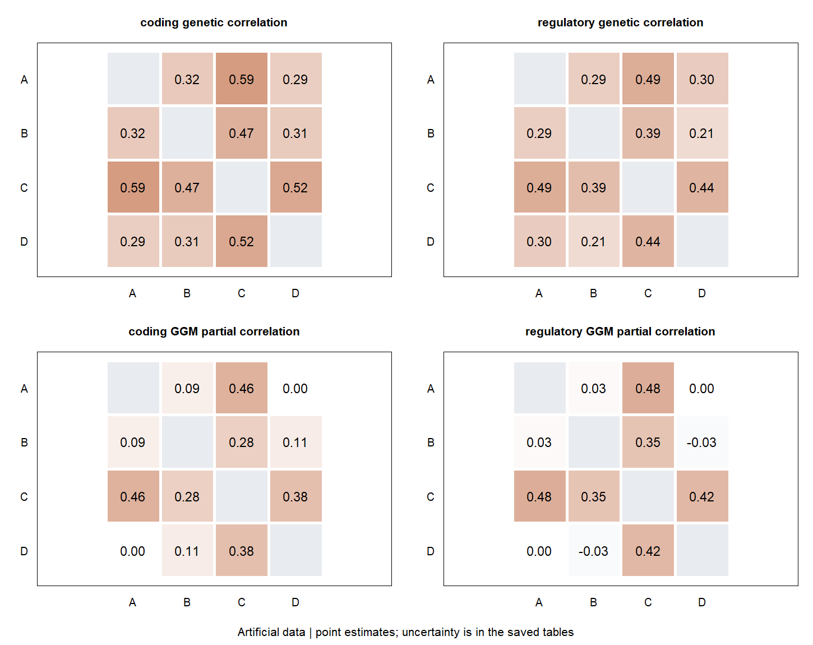

Genetic covariance, SEM and graphical models
One input, different questions
SEM describes a specified factor or path model for genetic covariance. A Gaussian graphical model describes relationships conditional on the remaining traits. Both use the existing native gcorr covariance fitter through gcorr(). Neither a directed path nor a partial correlation alone establishes causality.
Download the complete example. It constructs four-trait covariance summaries from one common factor, supplies an illustrative full sampling covariance, and fits both models. It saves a result bundle, two tables and one figure under build/examples/covariance-workflow. This checks the workflow; it is not a GWAS simulation or a calibration study.
Prepare covariance summaries
The genetic covariance matrix \(G\) and the sampling covariance \(V\) of its estimated entries are different objects. Four traits give ten distinct covariance moments, so \(G\) is \(4\times4\) and \(V\) is \(10\times10\).
library(gsuite)
traits <- c("A", "B", "C", "D")
loadings <- c(.8, .7, .6, .5)
G <- tcrossprod(loadings) + diag(c(.4, .5, .6, .7))
dimnames(G) <- list(traits, traits)
moments <- c("A|A", "B|A", "C|A", "D|A", "B|B",
"C|B", "D|B", "C|C", "D|C", "D|D")
V <- .0004 * .3^abs(outer(1:10, 1:10, "-"))
dimnames(V) <- list(moments, moments)
input <- gcorr(
G, method = "covariance", task = "prepare",
sampling_covariance = V, continuous = TRUE,
units = setNames(rep("standardized units", 4), traits),
provenance = "Constructed common-factor example"
)Moment order follows the lower triangle column by column, including the diagonal. Names and order must match exactly. The input retains trait units, provenance and, when extracted from a fit, reference and estimation metadata. Saving the ordinary R list with saveRDS() needs no native pointer.
Fit a common factor with an explicit SEM table
The model uses \(x=Bx+\varepsilon\), with disturbance covariance \(S\) and \(G=[(I-B)^{-1}S(I-B)^{-T}]_{\mathrm{observed}}\). Here a latent factor F has fixed variance one and four free loadings.
model <- list(
variables = c(traits, "F"),
parameters = data.frame(
name = c(paste0("l", traits), paste0("v", traits)),
start = c(rep(.5, 4), rep(.6, 4)),
lower = c(rep(-Inf, 4), rep(1e-8, 4))),
entries = data.frame(
matrix = c(rep("directed", 4), rep("disturbance", 5)),
row = c(traits, traits, "F"),
column = c(rep("F", 4), traits, "F"),
parameter = c(paste0("l", traits), paste0("v", traits), ""),
value = c(rep(0, 8), 1)))
sem <- gcorr(input, method = "sem", task = "fit", model = model)
summary(sem)
sem$fitted_covariance
sem$diagnosticsFor directed, column points to row. For disturbance, each symmetric pair is supplied once. An empty parameter name fixes an entry to value; a named parameter uses value=0. Reusing a parameter name imposes equality. Unlisted entries are zero. Disturbance variances must be specified, and the directed graph must be acyclic. Factor scale and orientation follow constraints and starts. The same tables can therefore describe observed-variable path models as well as latent-factor models; this interface does not parse lavaan syntax.
The constructed data have loadings 0.8, 0.7, 0.6 and 0.5 and specific variances 0.4, 0.5, 0.6 and 0.7. These provide a direct numerical check of the fitted table.
Inspect and fit a graphical model
A descriptive network computes \(\Omega=G^{-1}\) and \(\rho_{ij\mid\mathrm{rest}}=-\Omega_{ij}/\sqrt{\Omega_{ii}\Omega_{jj}}\). It needs no sampling covariance and supplies no edge-selection inference.
network <- gcorr(input, method = "ggm", task = "network")
network$partial_correlation
plot(network)
graph <- list(edges = matrix(c("A", "B", "B", "C", "C", "D"),
ncol = 2, byrow = TRUE))
ggm <- gcorr(input, method = "ggm", task = "fit", model = graph)
summary(ggm)
ggm$edges
ggm$network$partial_correlation
plot(ggm)The fixed graph allows A–B, B–C and C–D edges; all other precision off-diagonals are fixed zero. All diagonals are estimated. This chain deliberately restricts the common-factor covariance and need not fit it exactly. Fixed zeros are not estimated edges with zero standard errors. Specify a graph on substantive grounds; selecting it from the same estimates changes the inference problem.
Test specified hypotheses
Tests use the fitted parameter covariance and call the native gcorr constraint components. For SEM, each row of \(R\) defines one linear hypothesis \(R\theta=c\). Column names must exactly match the fitted parameter table.
R <- matrix(0, 2, nrow(sem$estimates),
dimnames = list(c("equal lA and lB", "lC equals 0.5"),
sem$estimates$parameter))
R[1, c("lA", "lB")] <- c(1, -1)
R[2, "lC"] <- 1
sem_test <- gcorr(sem, method = "sem", task = "test",
constraints = R, control = list(target = c(0, 0.5)))
sem_test$resultsThis is one joint two-degree-of-freedom Wald test. Test a single path with one row, or test several paths jointly with several independent rows. Repeating a constraint does not create additional evidence; dependent constraints return an unavailable result with a reason.
For a fitted GGM, select one or more edges that were free in the original graph:
edge_test <- gcorr(ggm, method = "ggm", task = "test",
edges = matrix(c("A", "B", "B", "C"), ncol = 2, byrow = TRUE))
edge_test$resultsThe native test evaluates whether the selected precision entries are jointly zero in the fitted encompassing graph. This is equivalent to zero partial correlation for those edges. Fixed or absent edges cannot be tested as fitted parameters. The test does not compare two independently fitted objectives and does not validate a graph chosen after inspecting the same data.
Reuse an existing gcorr result
# sumher_fit is a multivariate SumHer fit with coordinated jackknife blocks.
input <- gcorr(sumher_fit,
method="covariance", task="prepare",
continuous=TRUE, units=c(A = "standardized units", B = "standardized units",
C = "standardized units", D = "standardized units"), scope="reference", component="all")For compatible multivariate SumHer results, the helper extracts both \(G\) and the full joint \(V\) by labels, including cross-entry uncertainty. A single architecture component can be selected explicitly instead of the total. It does not combine components, regions or ancestries.
Other existing gcorr results can provide a complete point matrix for descriptive networks. Fitting also requires a correctly labelled full sampling covariance supplied explicitly when the result does not expose it. Marginal SEs are never substituted. In particular, LAVA’s component sampling covariance is not \(V\) for estimated covariance moments. Binary/mixed inputs are outside this interface.
Fit and compare models across annotations
A coordinated multivariate GNOVA fit can supply several annotation-category covariance matrices and their complete joint block-jackknife covariance. A coordinated SumHer fit supplies the corresponding architecture components. The same prespecified model can then be fitted to every selected group:
# stat, LD and annotation have already been aligned and prepared.
source_fit <- gcorr(
stat, LD,
annotation = annotation,
method = "gnova",
task = "rg",
control = list(overlap_intercept = 0)
)
grouped_sem <- gcorr(
source_fit,
method = "sem",
task = "fit",
annotation = c("coding", "regulatory"),
model = model,
units = setNames(rep("standardized units", length(source_fit$traits)),
source_fit$traits)
)
grouped_sem$estimates
grouped_sem$parameter_sampling_covarianceThe annotation argument selects covariance groups here. It remains the marker-by-annotation input when estimating GNOVA or SumHer. If it is omitted, all available categories or components are fitted. units explicitly records the common continuous-trait scale.
Column labels combine group and parameter names. A comparison of one loading between two annotations is therefore an ordinary named contrast:
R <- matrix(0, 1, nrow(grouped_sem$estimates),
dimnames = list("coding minus regulatory lA",
grouped_sem$estimates$label))
R[1, c("coding::lA", "regulatory::lA")] <- c(1, -1)
loading_test <- gcorr(grouped_sem, method = "sem", task = "test",
constraints = R)
loading_test$resultsFor a grouped GGM, fit$partial_correlations$estimates contains labelled free edges and their full cross-group covariance. The same constraint form compares partial correlations. Set control = list(quantity = "precision") only when a precision-parameter contrast is the intended estimand.
A runnable annotation example
Download and run the complete four-trait example. It uses gsim to generate 10,000 individuals with summary statistics at 800 markers, a separate 2,000-individual LD reference, 40 jackknife blocks and two disjoint, artificial marker annotations. The script prepares LD, estimates annotation-specific covariance with multivariate GNOVA, fits the same one-factor SEM and fixed GGM in each group, and tests one named cross-group contrast for each model. It writes results and diagnostics to build/examples/grouped-covariance-workflow/.

The SEM fixes the factor variance to one. The GGM specifies all pairwise edges except A–D, which is fixed absent. Both groups converged and returned identified, non-boundary fits with joint inference available. Two selected results illustrate why the cross-group covariance matters:
| Quantity | Coding estimate (SE) | Regulatory estimate (SE) | Cross-group Wald \(p\) |
|---|---|---|---|
| SEM loading for A | 0.284 (0.030) | 0.310 (0.046) | 0.639 |
| GGM partial correlation A–B | 0.089 (0.116) | 0.034 (0.080) | 0.665 |
These are results from one artificial dataset, not calibrated evidence about annotation differences or a comparison of SEM and GGM as scientific models. The figure shows point estimates only; the saved tables include SEs, joint contrasts and per-group diagnostics. The full group-by-group source covariance and joint sampling covariance are retained with the model results.
Every group fit remains in fit$fits, including failures and diagnostics. Joint inference is withheld if any selected group lacks regular inference or the cross-group covariance is missing or invalid. GNOVA categories may overlap; their difference is a comparison of the reported category quantities, not an estimate of mutually exclusive or uniquely attributable effects. SumHer architecture components have a different meaning and remain labelled as such.
Read the diagnostics before interpreting parameters
Fitting uses diagonally weighted least squares, full-\(V\) sandwich uncertainty and a residual-contrast fit test. It is not an individual-level Gaussian likelihood. Check available, converged, identified, boundary and inference_available. Boundary, singular or poorly conditioned cases may withhold estimates or inference; tests are then returned as unavailable rather than assigned a statistic. The interface does not repair matrices. Feasible alternative starts can assess sensitivity to local optima. The separate full-weight residual statistic is reported without a general chi-square p-value.
These are continuous covariance models, not full replacements for Genomic SEM or graphical-model packages. Automatic model search, binary extensions and selection-aware inference are not exposed here. Grouped comparisons currently require one coordinated multivariate GNOVA or SumHer fit, one LD reference and a complete, finite and adequately conditioned joint block-jackknife covariance. With too few effective blocks, the covariance can be rank deficient even though every entry is present; the fit then remains unavailable with a diagnostic. See the MR workflow for instrument-based directional analysis and summary-statistic guide for covariance estimation.